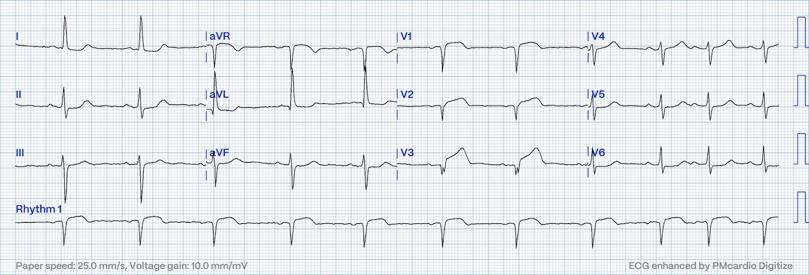
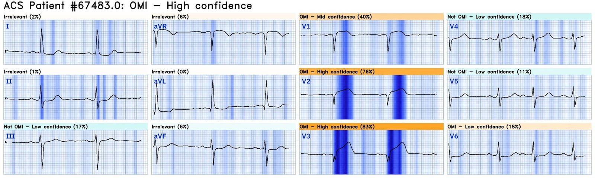
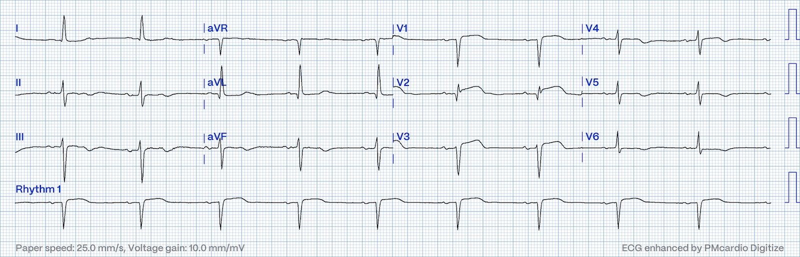
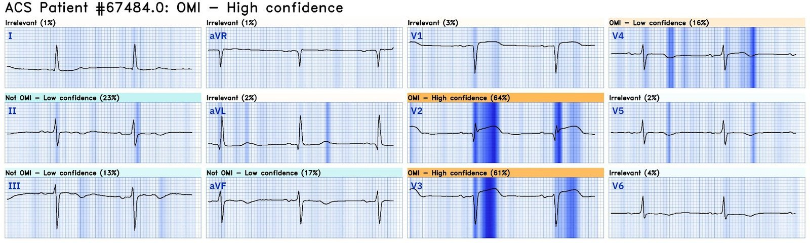
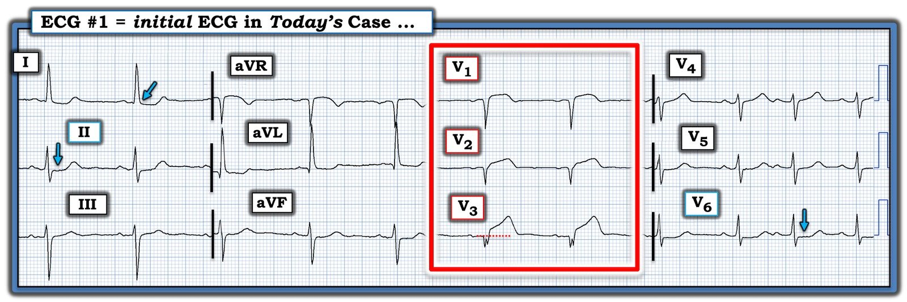

08/10/2024 — Không nhận ra OMI có thể tệ hại đến mức nào? OMI rõ ràng hay không rõ ràng đối với ai?
Bản dịch tiếng Việt của bài "How terrible can it be to fail to recognize OMI? To whom is OMI Obvious or Not Obvious?" – Dr. Smith’s ECG Blog. Giữ nguyên toàn bộ 6 hình ảnh của bản gốc.
Ca này do một độc giả muốn giấu tên gửi cho tôi.
Một phụ nữ ở độ tuổi 60 đến phòng cấp cứu vì khó chịu ở ngực và khó
thở. Bà có tiền sử nhồi máu cơ tim thành trước, đã được điều trị bằng PCI tiên phát
vào LAD đoạn gần. Điện tâm đồ đầu tiên được ghi lúc 2:30 chiều ngày
đến phòng cấp cứu.


Smith: Với tôi, đây là một nhồi máu cơ tim do tắc (OMI) thành trước cấp rõ ràng đến trắng trợn. Có sóng T tối cấp (hyperacute T-waves) rất lớn ở V2 và V3. Có ST chênh lên nhưng không đạt tiêu chuẩn ở V2 và V3. Mắt tôi sẽ trợn tròn chỉ trong vòng một giây khi nhìn điện tâm đồ này.
Tôi đã nhắn ca này cho nhóm “EKG Nerdz” của chúng tôi, hỏi: “Các bạn có nghĩ rằng có ai đó có thể bỏ sót ca này không?”
Pendell trả lời: “Nghe như một câu chuyện đã xảy ra ít nhất vài lần khác nữa ngay trong hôm nay mà chẳng ai nhắn cho anh về nó.” (tức là, có, người ta có thể bỏ sót)
Willy Frick trả lời: “Rõ ràng nếu nhìn như một OMI. Tinh tế nếu nhìn như một STEMI.” (tức là, bạn PHẢI biết mô hình OMI thì mới “thấy” được điện tâm đồ này)
Đây là kết quả đọc của Queen of Hearts:


OMI với độ tin cậy Cao. Ca này dễ đối với Queen.
Có màu xanh đậm tại vị trí các sóng T tối cấp trên bản đồ giải thích (explainability map) này.
Bấm vào đây để đăng ký sử dụng Queen of Hearts
Đây là kết quả đọc chính thức của bác sĩ tim mạch: “nhịp
xoang với loạn nhịp xoang rõ, phì đại thất trái kèm bất thường
tái cực, và nhồi máu trước vách, không xác định được thời điểm.” Nhồi máu toàn bộ thành trước CẤP khủng khiếp này đã không được bác sĩ tim mạch nhận ra.
Khi troponin I ban đầu trả về ở mức 158 ng/L, bệnh nhân được chẩn đoán nhồi máu cơ tim không ST chênh lên (NSTEMI). Bệnh nhân được nhập viện để theo dõi. Không ghi lại điện tâm đồ.
Điện
tâm đồ không được ghi lại cho đến 7 giờ sáng hôm sau, khoảng 16 giờ sau đó. Troponin I độ nhạy cao tăng từ 158 lên 1482 rồi 9639 ng/L qua đêm. Xét rằng đây là trước khi troponin được đẩy vào tuần hoàn nhờ điều trị tái tưới máu, đây là mức troponin tăng rất cao.
Đây là điện tâm đồ thứ 2 đó, 16 giờ sau:


Bạn nghĩ gì?
Smith: OMI thành trước tiếp diễn (bán cấp). Sóng T tối cấp vẫn tồn tại. Không có sự tiến triển thành ST chênh lên (điều này thường gặp; xem dữ liệu bên dưới)
Đây là kết quả đọc của Queen:


Điện tâm đồ ghi lại này được một bác sĩ tim mạch đọc như sau.
“Điện tâm đồ ban đầu
cho thấy các thay đổi thiếu máu cục bộ đáng lo ngại cho nhồi máu trước vách.
Điện tâm đồ ghi lại không cho thấy ST chênh lên ở các chuyển đạo trước.”
Lại bỏ sót OMI một lần nữa!!
Khoảng 45 phút sau điện tâm đồ thứ hai, bệnh nhân được phát hiện
ngừng tim.
Bệnh nhân được hồi sức toàn lực (full code), và đạt tái lập tuần hoàn tự nhiên (ROSC).
Bệnh nhân được đưa vào phòng thông tim (cath lab), nơi phát hiện tái hẹp trong stent 100%
ở LAD đoạn gần. Một máy tạo nhịp tạm thời được đặt,
và bệnh nhân được nhập ICU trong tình trạng sốc tim.
Cuối
ngày hôm sau, bệnh nhân lại ngừng tim. Bệnh nhân không thể
hồi sức được nữa.
Bình luận của người gửi: “Với tôi, cả hai điện tâm đồ rõ ràng là OMI do LAD. Tôi không thực hiện điện tâm đồ nào trong hai
điện tâm đồ này, nhưng khi thấy điện tâm đồ ghi lại, tôi muốn ngay lập tức
ghi thêm một lần nữa vì bệnh nhân ở ngay cuối hành lang. Đến lúc tôi
thấy điện tâm đồ ghi lại, bệnh nhân đã ngừng tim rồi. Điều
đáng bực bội là chúng tôi đã có hơn 16 giờ để nhận ra OMI, nhưng
đã không làm được.”
Bấm vào đây để đăng ký sử dụng Queen of Hearts
NHỮNG ĐIỂM CẦN HỌC
BẠN PHẢI NHẬN RA SÓNG T TỐI CẤP!!
SÓNG T TỐI CẤP ĐƯỢC QUEEN OF HEARTS NHẬN RA DỄ DÀNG
SÓNG T TỐI CẤP KHÔNG TIẾN TRIỂN THÀNH ST CHÊNH LÊN — ĐÂY LÀ MỘT HUYỀN THOẠI
Pendell và tôi sắp nộp một bài báo về các dấu hiệu điện tâm đồ trong tắc LAD hoàn toàn 100% (OMI do LAD). Đây là điểm cốt lõi của bài báo:
Nhiều người tin rằng sóng T tối cấp là một trạng thái chuyển tiếp xảy ra trước ST chênh lên1–4 Vì vậy, dễ đặt giả thuyết rằng các ca OMI sớm rồi sẽ tiến triển thành STEMI; tuy nhiên, dữ liệu của chúng tôi mâu thuẫn với quan niệm đó. Trong nghiên cứu của chúng tôi, có 20/53 ca OMI do tắc LAD hoàn toàn (dòng chảy TIMI-0) không đạt tiêu chuẩn STEMI. Tất cả đều được chẩn đoán ngay trên điện tâm đồ đầu tiên bởi cả chuyên gia (Smith) lẫn Queen of Hearts. 17/20 bệnh nhân tắc LAD hoàn toàn cấp không có ST chênh lên có sóng T tối cấp trên điện tâm đồ ban đầu; 16/20 có (các) điện tâm đồ tiếp theo được ghi lại. Không ca nào trong 20 ca từng tiến triển đến tiêu chuẩn STEMI.
1. Koechlin L, Strebel I, Zimmermann T, Nestelberger T, Walter J, Lopez-Ayala P, Boeddinghaus J, Shrestha S, Arslani K, Stefanelli S, Reuthebuch B, Wussler D, Ratmann PD, Christ M, Badertscher P, Wildi K, Giménez MR, Gualandro DM, Miró Ò, Fuenzalida C, Martin-Sanchez FJ, Kawecki D, Bürgler F, Keller DI, Abächerli R, Reuthebuch O, Eckstein FS, Twerenbold R, Reichlin T, Mueller C, APACE investigators. Hyperacute T Wave in the Early Diagnosis of Acute Myocardial Infarction. Ann Emerg Med [Internet]. 2023;82:194–202. Truy cập tại: http://dx.doi.org/10.1016/j.annemergmed.2022.12.003
2. Zorzi A, Perazzolo Marra M, Migliore F, Tarantini G, Iliceto S, Corrado D. Interpretation of acute myocardial infarction with persistent “hyperacute T waves” by cardiac magnetic resonance. European Heart Journal: Acute Cardiovascular Care [Internet]. 2012;1:344–348. Truy cập tại: https://journals.sagepub.com/doi/abs/10.1177/2048872612466537
3. Verouden NJ, Koch KT, Peters RJ, Henriques JP, Baan J, van der Schaaf RJ, Vis MM, Tijssen JG, Piek JJ, Wellens HJ, Wilde AA, de Winter RJ. Persistent precordial “hyper acute” T-waves signify proximal LAD artery occlusion. Heart [Internet]. 2009;Truy cập tại: http://www.ncbi.nlm.nih.gov/entrez/query.fcgi?cmd=Retrieve&db=PubMed&dopt=Citation&list_uids=19620137
4. Dressler W, Roesler H. High T waves in the earliest stage of myocardial infarction. Am Heart J [Internet]. 1947;34:627–645. Truy cập tại: https://www.sciencedirect.com/science/article/pii/0002870347903438
Bấm vào đây để đăng ký sử dụng Queen of Hearts

===================================
BÌNH LUẬN CỦA TÔI, bởi KEN GRAUER, MD (8/10/2024):
===================================
Nhìn lại một ca bệnh từ sự thoải mái ở nhà mình — và phê phán các quyết định đã được đưa ra — thì bao giờ cũng dễ hơn. Dù hoàn toàn thừa nhận thực tế này — tôi nghĩ điều quan trọng là “thấy sao nói vậy” — với hy vọng đưa ra một góc nhìn khách quan về điện tâm đồ ban đầu của ca hôm nay.
- Để rõ ràng, trong Hình 1 — tôi đã đánh dấu bản ghi ban đầu của ca hôm nay. Tôi đọc bản ghi này khi chỉ biết rằng bệnh nhân là một phụ nữ ở độ tuổi 60, có tiền sử OMI do LAD đoạn gần trước đây — nay đến khoa cấp cứu (ED) với bệnh sử khó chịu ở ngực mới xuất hiện và khó thở.


SUY NGHĨ CỦA TÔI về điện tâm đồ ban đầu của ca hôm nay:
Nhịp nền trong điện tâm đồ #1 là nhịp xoang ~60 lần/phút. Một vài ngoại tâm thu nhĩ (PAC) được thấy ở vài nhát cuối của bản ghi. Các khoảng (PR-QRS-QTc) bình thường. Trục lệch trái, nhưng chưa đủ lệch trái để đạt tiêu chuẩn blốc phân nhánh trái trước (LAHB). Phì đại thất trái (LVH) được gợi ý bởi R≥12 mm ở chuyển đạo aVL.
- Điểm MẤU CHỐT: Sự phân biệt quan trọng cần thực hiện trong ca hôm nay là giữa các dấu hiệu điện tâm đồ phù hợp với OMI do LAD trước đây của bệnh nhân — so với — các dấu hiệu điện tâm đồ của một biến cố cấp mới chồng lên các dấu hiệu điện tâm đồ cũ này.
“Mắt” tôi ngay lập tức bị thu hút vào các chuyển đạo V1,V2,V3 (trong hình chữ nhật MÀU ĐỎ).
- Phức bộ QS được thấy ở mỗi chuyển đạo trong 3 chuyển đạo trước đầu tiên này — với phân mảnh rõ của phức bộ QS ở chuyển đạo V3. Rõ ràng, bệnh nhân này đã từng bị nhồi máu trước vách vào một thời điểm nào đó.
- Mặc dù hình dạng của ST chênh lên là bất thường ở 2 chuyển đạo trước đầu tiên (dạng vòm ở chuyển đạo V1 — với đoạn khởi đầu ST thẳng đuỗn ở chuyển đạo V2) — mức độ ST chênh lên thực sự lại tương đối khiêm tốn (dù có lẽ vẫn quá mức ở chuyển đạo V2 — khi xét biên độ rất nhỏ của phức bộ QS ở chuyển đạo này).
- Dù vậy — không nên có chút nghi ngờ nào rằng mức ST chênh lên tại điểm J ở chuyển đạo V3 là quá mức, kèm theo hình dạng tối cấp “quá đầy đặn” (hypervoluminous) của sóng ST-T ở chuyển đạo này, lớn đến mức “nuốt chửng” phức bộ QS nhỏ, phân mảnh ở V3.
- Trong bối cảnh người phụ nữ ở độ tuổi 60 này có bệnh mạch vành đã biết (và nay đến khám vì khó chịu ở ngực cấp) — tôi diễn giải các chuyển đạo lân cận V1 và V2 là một phần của cùng quá trình cấp tính được gợi ý bởi QRST ở chuyển đạo V3. Và kết hợp với ST chênh xuống dạng dẹt ở chuyển đạo bên V6 (và ở mức độ ít hơn ở chuyển đạo V5) — nhận định điện tâm đồ của tôi là “Xoáy” trước tim (Precordial Swirl), chỉ điểm tắc LAD đoạn gần cấp chồng lên nhồi máu cũ — cho đến khi chứng minh được điều ngược lại. (Để biết thêm về xoáy trước tim — Xem bài ngày 15 tháng Mười năm 2022 trên Dr. Smith’s ECG Blog).
- Ủng hộ cho nhận định của tôi rằng các thay đổi sóng ST-T ở các chuyển đạo ngực là cấp tính cho đến khi chứng minh được điều ngược lại — là đoạn ST dẹt và chênh xuống ở chuyển đạo II — cũng như ST chênh xuống tại điểm J ở chuyển đạo I (các mũi tên XANH ở những chuyển đạo này).
- Cần đẩy nhanh việc thông tim sớm để xác định giải phẫu.